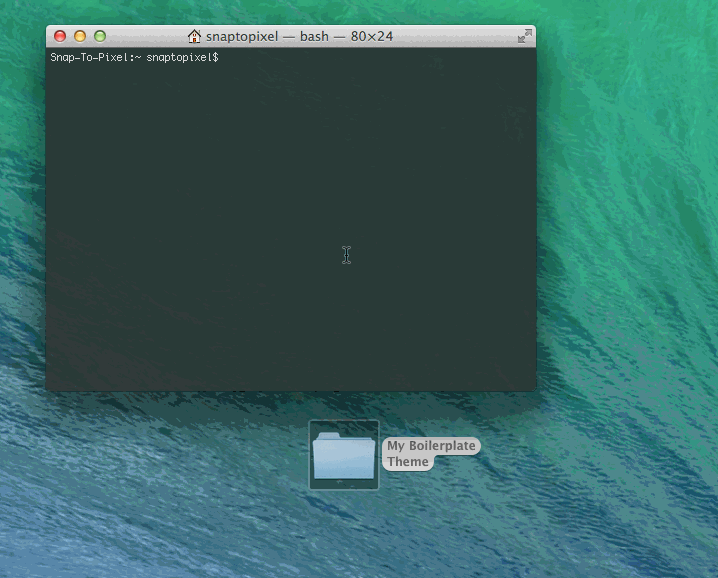

Previewing Changes
The live preview server allows you to change theme settings and preview them locally in your web browser as you work. This creates an easy way to tweak and see your changes happen in (almost) real time.
Starting Grunt
"Grunt" is the build tool that will handle and automate all of the nitty-gritty for you. You use it by invoking predefined "tasks" via the command line.
Using the Terminal
Open the terminal and switch to your project directory using cd or similar. Then simply type grunt which will start the server and open the boilerplate preview inside your default browser. Once you've started the server it will continue to run and watch for changes to the project files. When you want to stop the server press ctrl+c or simply close your terminal window.
